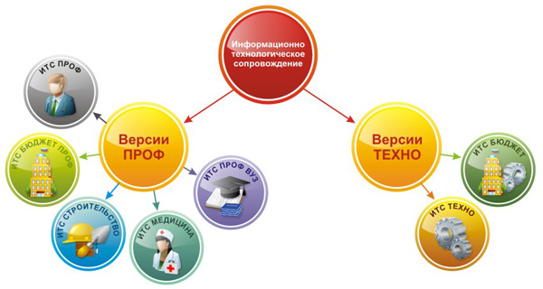

В состав "1С:ИТС" входят:
1. Профессиональная информационная система для пользователей программ "1С" в Интернет и на DVD.
На сайте Интернет-версии ИТС its.1c.ru и на ежемесячном DVD публикуются и поддерживаются в актуальном состоянии:
Ежемесячно фирма "1С" дарит пользователям профессиональных версий "1С:ИТС" журнал "БУХ.1С" и сувенир делового назначения.
2. Сервисные и консультационные услуги фирмы "1С":Сопровождение в течение льготного периода после покупки программы "1С:Предприятие" версии ПРОФ входит в стоимость программного продукта. Дальнейшее сопровождение осуществляется в рамках платного.
На верхВерсии 1С:ИТС
Информационно-технологическое сопровождение пользователей "1С:Предприятие" (1С:ИТС) подразделяется на две версии: "ПРОФ" и "ТЕХНО".
Объем информации и предоставляемого сервиса зависит от версии 1С:ИТС.
Договор 1С:ИТС версий ПРОФ обеспечивает пользователям программ "1С:Предприятие" максимальное количество информации и сервисов, предоставляемых фирмой "1С" и партнером фирмы "1С".
Договор 1С:ИТС версий ТЕХНО обеспечивает пользователям программ "1С:Предприятие" только возможность легального получения обновлений для приобретенных программных продуктов "1С:Предприятие" и минимально-необходимый объем сервисных услуг от фирмы "1С". Договор на 1С:ИТС версии ТЕХНО не включает услуги партнера фирмы "1С".
Сопровождение профессиональных версий программ "1С:Предприятие" осуществляется только в форме договора на 1С:ИТС.
1.ИТС ПРОФ — информационная система фирмы "1С" для коммерческих организаций.
Предназначена для руководителей, юристов, кадровиков, экономистов, бухгалтеров, бухгалтеров-расчетчиков и ИТ - специалистов коммерческих организаций.Подробнее об ИТС ПРОФ...
2.ИТС БЮДЖЕТ ПРОФ — специализированная информационная система фирмы "1С" для государственных (муниципальных) учреждений.
Предназначена для руководителей, юристов, кадровиков, экономистов, бухгалтеров, бухгалтеров-расчетчиков и ИТ-специалистов государственных (муниципальных) учреждений.
Подробнее об ИТС БЮДЖЕТ ПРОФ...
3.ИТС СТРОИТЕЛЬСТВО и ЖКХ — специализированная информационная система фирмы "1С" для строительных и ЖКХ организаций.
Предназначена для руководителей, бухгалтеров, инженерно-технических работников, юристов, экономистов и ИТ-специалистов строительных и ЖКХ организаций.
Подробнее об ИТС СТРОИТЕЛЬСТВО и ЖКХ...
4.ИТС МЕДИЦИНА — специализированная информационная система фирмы "1С" для медицинских учреждений.
Предназначена для руководителей, юристов, бухгалтеров, провизоров медицинских учреждений, ИТ-специалистов по использованию программ "1С:Предприятие" в медицинских учреждениях.
Подробнее об ИТС МЕДИЦИНА...
5.ИТС ПРОФ ВУЗ — специализированная информационная система, созданная фирмой "1С" специально для преподавателей и студентов высших и средних учебных заведений.
ИТС ПРОФ ВУЗ предназначена для комплексной поддержки учебного процесса, ориентированного на подготовку молодых специалистов в области экономики, управления и IT-технологий, чья дальнейшая работа будет связана с активным использованием программных продуктов семейства "1С:Предприятие".
Учебные заведения, подписанные на ИТС ПРОФ ВУЗ, могут использовать всю информацию с ИТС ПРОФ ВУЗ для подготовки учебных курсов для студентов. Ссылка на то, что учебный курс разработан на основании материалов, опубликованных на ИТС ПРОФ ВУЗ - обязательна.
ИТС ПРОФ ВУЗ cодержит материалы ИТС ПРОФ, но распространяется по специальному льготному договору. ИТС ПРОФ ВУЗ оформляется для ВУЗов бесплатно. Предназначен для преподавателей и студентов ВУЗов.
ТЕХНОЛОГИЧЕСКИЕ ИНФОРМАЦИОННЫЕ СИСТЕМЫ ИТС
1.ИТС ТЕХНО - специализированная информационная система фирмы "1С" для коммерческих организаций.
Содержит только:
1.обновления платформы "1С:Предприятие", форм отчетности и конфигураций для коммерческих организаций на платформе "1С:Предприятие";
2.материалы по методической поддержке разработчиков конфигураций для коммерческих организаций.
Предназначена только для ИТ-специалистов, занимающихся разработкой, доработкой и сопровождением конфигураций для коммерческих организаций.
2.ИТС БЮДЖЕТ - специализированная информационная система фирмы "1С" для государственных (муниципальных) учреждений.
Содержит только:
1.обновления платформы "1С:Предприятие", форм отчетности и конфигураций для государственных (муниципальных) учреждений на платформе "1С:Предприятие";
2.материалы по методической поддержке разработчиков конфигураций для государственных (муниципальных) учреждений;
Предназначена только для ИТ-специалистов, занимающихся разработкой, доработкой и сопровождением конфигураций для бюджетных учреждений
Договор на 1С:ИТС может оформить юридическое или физическое лицо - официальный пользователь программы системы "1С:Предприятие".
Официальным пользователем "1С:Предприятие" считается пользователь, который приобрел легальную версию программы и зарегистрировал ее в фирме "1С".
Льготный договор на 1С:ИТС оформляется сразу после приобретения программы. По истечении 6 месяцев со дня покупки программы пользователь утрачивает право на активацию льготного сопровождения.
Дляполучения ответов на интересующие Вас вопросы и оформления договора свяжитесь с отделом сопровождения по тел.: +7(8152) 550-204 или коммерческим отделом по тел.:+7 (8152) 550-201.
На верхУсловия оказания разовых услуг:
Решение "1С:Отчетность" позволяет упростить процесс отправки отчетов в контролирующие органы ФНС, ПФР, ФСС, органы статистки – для этого не требуется приобретение дополнительного программного оборудования, отправка отчетности осуществляется непосредственно из программы "1С".
Это, пожалуй, лучшее предложение на рынке Электронной отчетности, ведь теперь ваша работа станет намного удобнее и быстрее.
Подключить "1С:Отчетность" — это просто:
1. Оплатите счет
2. Получите программный продукт
3. Приступайте к отправке отчетности
Вы можете заполнить заявку на подключение сервиса, отправив карточку клиента на электронный ящик:
• its@netsl.ru
Бланк карточки клиента (скачать)
Звоните по телефонам:
• (8152) 550-201, 550-757 (менеджер – Екатерина Пурх)
Мы гарантируем вам надежную отправку отчетности через одного из крупнейших спецоператоров связи!
На верхКомпания NetSL является Золотым сертифицированным партнером "1С-Битрикс" и предлагает своим клиентам услуги по созданию корпоративного портала на базе продуктов "Битрикс".
Корпоративный портал - система управления внутренним информационным ресурсом компании для коллективной работы над задачами, проектами и документами, для эффективных внутренних коммуникаций. Подробнее о продукте на нашем сайте.
Наши услуги:
• Предпроектное обследование, подготовка к внедрению Корпоративного портала. Разработка ТЗ.
• Установка и настройка корпоративного портала на серверах Заказчика или на хостинге (VPS или Dedicated Server).
• Внедрение портала (адаптация дизайна, информационное наполнение, оптимизация бизнес-процессов на платформе "Битрикс").
• Системная интеграция (1С, Active Directory, MS Office, MS Outlook, MS Exchange), настройка работы на мобильных устройствах (iOS и Android).
• Техническая поддержка и сопровождение "Битрикс".
Почему стоит делать выбор в пользу сотрудничества с NetSL:
• Развертывание (установка и настройка) портала за 1 день;
• Опыт внедрения портала на различных платформах (Windows и Unix);
• Наличие сотрудников с подтвержденной компетенцией "Битрикс";
• Консультации по выбору редакции «Битрикс» (коробочная версия или облако);
• Настройка безопасности и защиты данных на портале.
Зачем вашей компании корпоративный портал?
Экономьте рабочее время:
• сократятся издержки на поиск нужной в конкретный момент информации;
• минимизируются потери корпоративной информации;
• значительно ускорятся бизнес-процессы компании;
• исчезнут проблемы с коммуникациями между сотрудниками;
• новый персонал будет быстрее адаптироваться.
Повышайте эффективность сотрудников:
• персонал будет в курсе того, что происходит в компании и подразделениях;
• опыт работы будет копиться в корпоративной базе знаний;
• знания будут использоваться многократно и передаваться внутри компании;
• рабочие группы смогут работать сообща над проектами и документами;
• кадры будут постоянно обучаться и проходить проф. переподготовку.
Оптимизируйте бизнес-процессы:
• все заявки будут последовательно обрабатываться ответственными лицами;
• сотрудники будут совместно работать над документами, задействовав систему документооборота;
• компания серьезно сэкономит на скорости прохождения операций;
• горизонтальные связи между подразделениями станут намного эффективнее;
• снизится потребность в командировках при территориально-распределенной структуре компании.
Обеспечьте контроль и управляемость:
• процесс работы всех подразделений компании станет прозрачным;
• внутренняя переписка сотрудников будет под контролем;
• занятость и отсутствие сотрудников можно будет контролировать;
• обратная связь с персоналом станет быстрее и эффективнее.
Повысьте качество управленческих решений:
• в рабочих группах можно будет обсуждать и корректировать совместные планы;
• внутренние коммуникация станут намного эффективней;
• результаты работы сотрудников и подразделений обретут прозрачность;
• решения типовых бизнес-задач сотрудники будут находить в корпоративной базе знаний.
Добейтесь эффективности бизнеса:
• повысится качество работы и обслуживания клиентов компании;
• вырастет конкурентоспособность компании на рынке;
• имидж компании поднимется в глазах сотрудников, клиентов, партнеров и инвесторов.